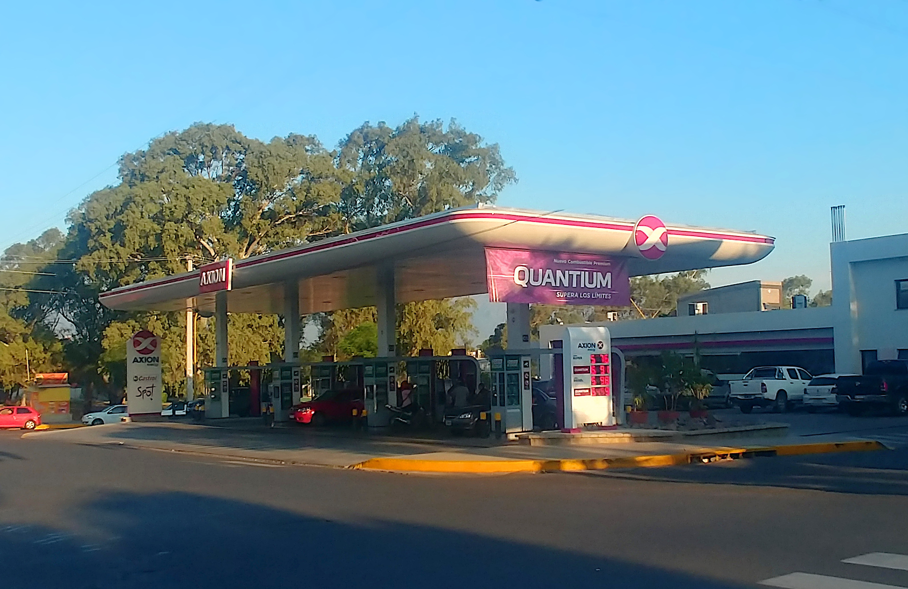
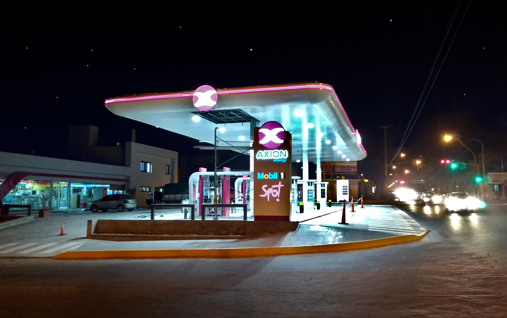

Spot JyF
Spot JyF es el complemento perfecto para una estación de servicio de excelencia.

La mejor experiencia
Nos destacamos por la calidad de nuestros productos, promos, panadería artesanal, un ambiente cordial con estética moderna. Atención con esmero y rapidez, lo que sumado a la marca de identidad en los uniformes característicos del Spot te permitirán descubrir más grata tu experiencia.
Te ofrecemos todo lo que necesitas
Mesas y barras, diarios, pantalla de TV, servicio de internet Wi-Fi, tomas de corriente para recargar los dispositivos portátiles de los clientes, sector para fumadores y estacionamiento exclusivo.
